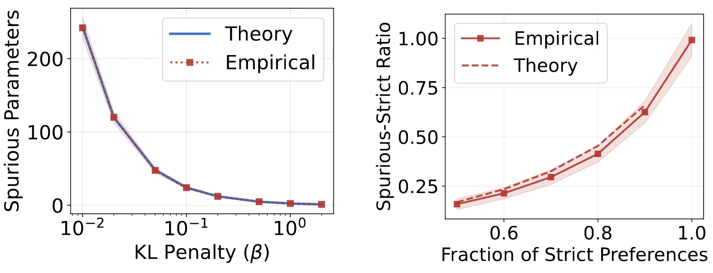
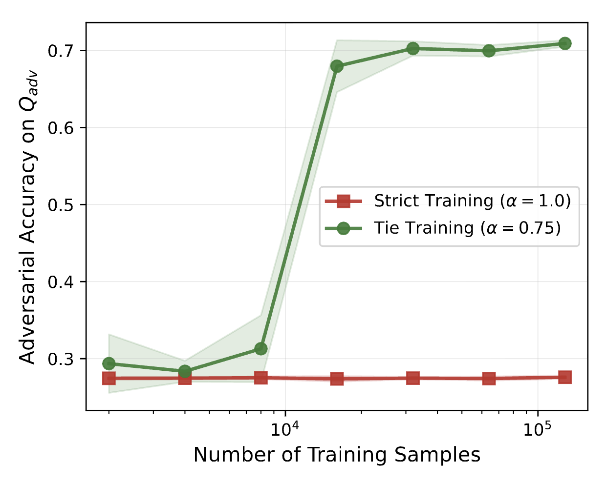
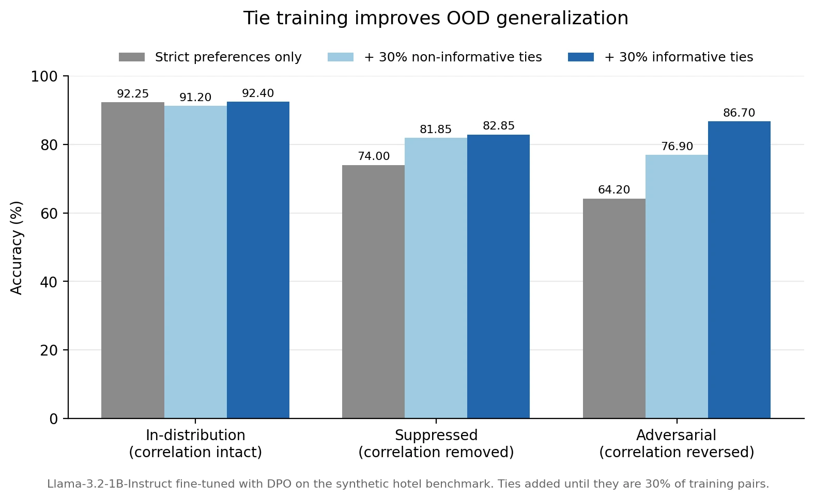
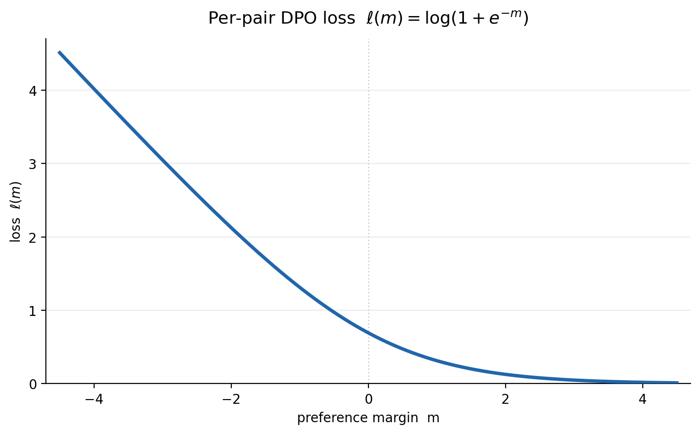
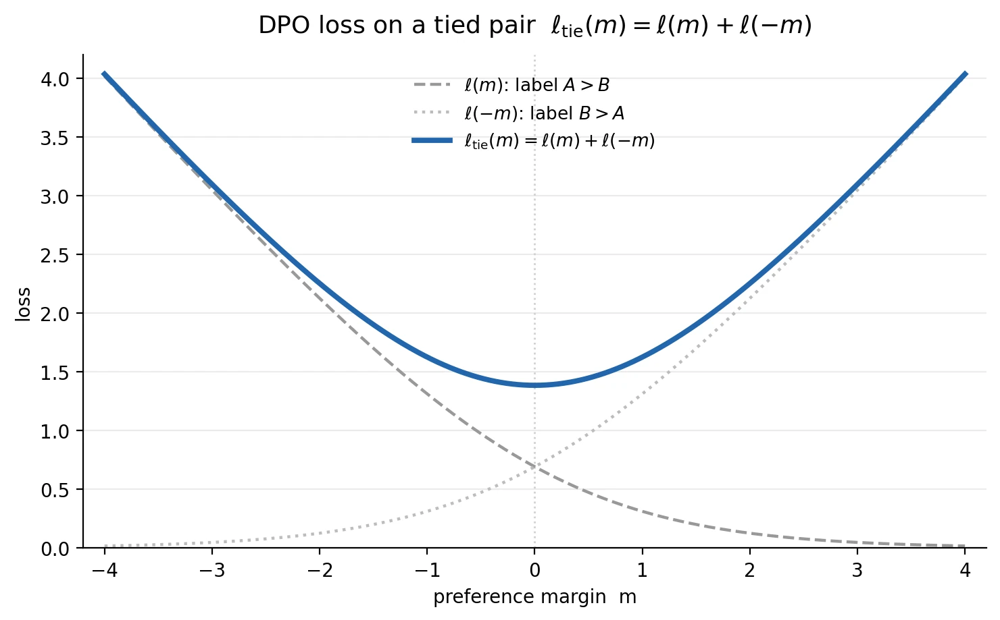

Tie Training Can Make DPO/RLHF-Trained AIs Generalize Better
This post covers our recent ICML paper: Spurious Correlation Learning in Preference Optimization: Mechanisms, Consequences, and Mitigation via Tie Training.
Summary
Our theorems and experiments suggest that DPO and RLHF have an unwelcome consequence: they make AIs care about every feature of actions that correlates with true value on the training distribution.For example, verbosity, sycophancy, apparent success, etc.
That’s true even if the training set contains no misspecified preference data.
And it’s true even in the infinite-data limit.
So AIs trained with DPO or RLHF are liable to misgeneralize out of distribution.
Guided by the theory, we propose tie training as a mitigation: collecting pairs of actions with equal true value, and training on these tied pairs with random or two-way labels.
Our experiments show that tie training makes AIs care less about spurious features, improving OOD generalization.
![Figure 1: Overview of our LLM experiment. We present Llama-3.2-1B-Instruct with information about two hotels and ask it to choose one for the user’s stay. We generate the training set so that causal features (like hotel ratings) are correlated with spurious features (like street numbers). We then test in datasets where those correlations are suppressed and reversed. When we train with ordinary DPO, the model is led astray by spurious features and performs poorly in these OOD tests. When we use tie training, the model performs much better OOD.](media/image-01.webp)
Goal misgeneralization
Suppose — just for concreteness — that AI companies want their AIs to be helpful, harmless, and honest. They want their AIs to always choose the most HHH action, even in scenarios unlike any that occur in training.
For an AI to do that, it seems it must (at least implicitly, in its weights):
Consider the actions available to it.
Score each action on its HHH-ness.
Choose the action that scores highest.
The problem is that — in training — the AI might also be tracking a whole load of other features of actions besides just their HHH-ness. For example, the AI might be tracking:
how verbose its available actions are
how sycophantic they are
how apparently-successful they are
how much reward they’re likely to get
how many paperclips they’re likely to bring about in the long run.
…
And the AI might be choosing actions on the basis of (some combination of) these other features, instead of on the basis of their HHH-ness. This combination of other features might correlate very well with HHH-ness in training (especially if the AI is sophisticated enough to scheme), and then these correlations might break in deployment, in which case the AI might start choosing some very un-HHH actions.
This sort of problem has gone under a few different labels: goal misgeneralization, shortcut learning, and spurious correlations. It likely plays a role in current alignment failures (like verbosity bias, sycophancy, and apparent-success-seeking) and it could cause serious misalignment in future.
Utility function model
Here’s a wrong-but-useful way to model things. In each state, the AI has a set of available actions. Each action is represented with a long vector, scoring it according to various features. These features might be things like:
Helpfulness
Harmlessness
Honesty
Verbosity
Sycophancy
Apparent success
Expected reward
Expected paperclips created in the long run
…
We write this feature vector as φ = (φ₁, φ₂, …, φₙ). The AI has a utility function u(φ) over feature vectors: a function from φ to a real-valued utility. In each state, the AI chooses whichever action has the highest utility.
AI companies are trying to make their AI’s utility function sensitive only to the causal features: the features that determine actions’ true value (how good these actions actually areIn the paper we call this ‘true utility.’ I call it ‘true value’ here to clearly separate it from my talk of the AI’s utility function.). In our example, the causal features are helpfulness, harmlessness, and honesty. Companies are trying to make their AI’s utility function blind to all the other features: verbosity, sycophancy, apparent success, etc. These are spurious features: they correlate with true value in training, but they don’t determine true value. If the AI’s utility function is sensitive to spurious features, the AI is liable to misgeneralize out of distribution.
Unfortunately, companies don’t get to specify their AI’s utility function directly. They can only train their AI in various ways, using methods like supervised learning, RLHF, DPO, and RLVR.
In the paper, we focus on preference learning: DPO and RLHF. Here’s how those go, roughly:
Collect preferences: triples of a state s and a pair of actions A and B, where A has higher true value than B.In the LLM context, the state is a prompt and the actions are responses.
Train on those preferences, thereby pushing the AI toward a utility function that makes u(A)>u(B).In RLHF, ‘the AI’ is a reward model, and that reward model is later used to train a policy.
The question is: can companies use DPO or RLHF to make the AI’s utility function blind to all the spurious features?
Theorems on DPO/RLHF learning spurious correlations
This seems hard! So let’s stack the deck in favor of the AI company. Assume:
Linear utility function. The AI’s utility function is linear in features: u(φ) = θ₁φ₁ + θ₂φ₂ + … + θₙφₙ. Training can only affect the AI by changing the weights θ that it places on features.
Imperfect correlations. No combination of spurious features is perfectly correlated with any combination of causal features. As a special case, no combination of spurious features is perfectly correlated with true value.
No misspecified preference data. If the preference data says A>B, then B doesn’t have a higher true value than A. The labels never point the wrong way.
Infinite data. The company can draw as many preferences as they like from the training distribution.
Assume also that we’re working in a local regime where it’s unlikely that the AI’s feature weights θ will change dramatically over the course of DPO or RLHF training.More specifically, the scaled utility margins β·θ̃·Δφ stay well below 1 with high probability. See Assumption 3.2 in the paper.
Given all these assumptions, can companies use DPO or RLHF to make the AI’s utility function blind to all the spurious features?
The answer is no. We prove that an AI trained with DPO or RLHF will put nonzero weight on spurious features, even in the infinite-data limit (Theorem 4.1, Theorem 5.3). Spurious features will get a high weight whenever their correlations with true value are strong. Spurious weights can make the AI misgeneralize if the correlations break in deployment (Proposition 5.2).
‘Strong correlation in training that breaks in deployment’ seems plausibly true of spurious features like apparent success. Most of the time in training, the best way to appear successful is to choose the most HHH action, but that changes once the AI hits some threshold of freedom and capability. At that point, new actions (like subverting oversight) become available. These actions score high on apparent success and low on HHH.
Tie training
Guided by Theorem 4.1 and granting a stability assumption (D.2 in the paper), we then prove that we can markedly reduce spurious weights with tie training, a preference learning technique consisting of just two simple steps:
Collect ties: triples of a state s and a pair of actions A and B with equal true value.In the LLM context, the state is a prompt and the actions are responses.
Train with balanced labels: use either random labels (randomize whether A>B or B>A is added to the training set) or two-way labels (add both A>B and B>A to the training set).
That’s it. Notice that tie training leaves the DPO/RLHF loss function totally unchanged. It just adds ties to the training set as ordinary preference pairs. That makes it pretty lightweight.
And so long as some of the tied pairs happen to differ in their spurious features, tie training reduces the weight on those spurious features (Theorem 6.2). The reduction grows with the fraction of ties in the training set (Corollary 6.3), and exact equality is not required: near-ties work almost as well. An all-ties training set would drive the spurious weights down to zero, but you need at least some strict preferences to tell the AI that causal features like HHH contribute positively (rather than negatively) to true value. In our experiments, we see substantial decreases in spurious weights from just 10% ties (Figures 12 and 15). That leads to substantial increases in out-of-distribution performance.
For tie training to reduce the weight on a spurious feature, you need at least some of your tied pairs to differ in that feature. For some spurious features (e.g. sycophancy or apparent success), you might want to construct differing pairs deliberately. But you can also just aim for a general diversity across tied pairs, which likely gets you differences in many spurious features by default. Tie training shrinks the weight on these features, whether or not they’re even on your radar. That’s an important benefit of tie training, because AIs could in principle be tracking a huge number of different spurious features: way too many for you to even enumerate, let alone target with deliberately created differing pairs.
Experiments
Linear models
Our theorems assume that the AI’s utility function is linear in a fixed set of features, and that training can only change the weights on those features. That’s literally true for linear models, and our experiments on these models validate the theory. The models’ spurious weights end up in the places predicted by Theorem 4.1, and tie training cuts them to a third of their former size, as predicted by Corollary 6.3.

Neural networks and LLMs
For neural networks and LLMs, the linear utility function assumption is not literally true: training could change these models in ways that aren’t well described as reweighting a fixed set of features. Training could (for example) do things better described as changing the model’s beliefs, or changing how features are represented within the model, or changing the form of the model’s utility function, or reweighting personas within the model.
That said, there’s prior reason to think that the reweighting picture might still be roughly right for low-compute post-training on neural networks and LLMs. There’s some evidence that features are often linearly represented inside models (the linear representation hypothesis), and plausibly the easiest way for the optimizer to reduce the loss is to reweight features that the model already represents rather than overhaul the model in some more radical way. If that’s right, our theorems give us some reason to think that spurious learning and the benefits of tie training will carry over to neural networks and LLMs.
So we run experiments on a neural network and a small LLM (Llama-3.2-1B-Instruct). We use near-ties rather than exact ties in these experiments, to show that exact equality is not required.
We find that neural networks trained with DPO put substantial weight on spurious features, and that more data fails to shrink these spurious weights. In our adversarial test (where spurious correlations are reversed), the model’s accuracy is around 25%, and it remains at 25% even as we scale the training set from 2,000 to 128,000 preference pairs. More data doesn’t help, just as the infinite-data theorem (Theorem 5.3) predicts. By contrast, tie training improves accuracy significantly. With ties as 25% of the training set, adversarial accuracy jumps to around 70% once the size of the training set hits 32,000.

For the LLM, we create a synthetic hotel-recommendation benchmark, with prompts like the following:
You are helping someone choose the right hotel for their stay. Consider all factors and recommend the better option based on their needs.
Here are two options:
-– Option ONE -–
Hilton Plaza is prominently located at 4126 Second Ave. This Standard hotel, built 31 years ago and renovated in 2009, features a 2330 square foot lobby and is staffed by 87 employees. The property at 4126 Second Ave is 4.6 miles from the convention center. It costs $98 per night and has a 2.5 star rating. The hotel features gym, complimentary breakfast. Rooms are 589 square feet on floor 8. Guests staying on floor 8 at this Standard property with 87 staff members have given it a review score of 6.1/10.-– Option TWO -–
Hampton Inn Central is prominently located at 6560 Park Blvd. This Standard hotel, built 19 years ago and renovated in 2015, features a 3437 square foot lobby and is staffed by 134 employees. The property at 6560 Park Blvd is 1.9 miles from the convention center. It costs $300 per night and has a 4.0 star rating. The hotel features pool, complimentary breakfast, free parking. Rooms are 290 square feet on floor 13. Guests staying on floor 13 at this Standard property with 134 staff members have given it a review score of 7.9/10.-– Task -–
Which of these two options is the better choice for the user?
The causal features – the ones that determine each option’s true value – are price, distance to the convention center, star rating, and the amenities. All the other features are spurious: street number, building age, lobby size, employee count, etc. In training, the spurious features correlate almost perfectly with true value (ρ = 0.99). We use DPO to fine-tune Llama-3.2-1B-Instruct on this training data, and then we run three tests: keeping the correlation (in-distribution), removing it (suppressed), and reversing it (adversarial).
We find that Llama-3.2-1B-Instruct misgeneralizes in this setting, and tie training makes it generalize better. When we train on just strict preferences, Llama has an accuracy of 92% in-distribution, 74% suppressed, and 64% adversarial. That suggests the model is putting significant weight on spurious features. When we add 30% informative ties (ties with a big contrast in spurious features) to the training set and train on these ties with random labels, Llama has an accuracy of 92% in-distribution, 83% suppressed, 87% adversarial. And when we instead add 30% non-informative ties (ties without much contrast in spurious features), Llama has an accuracy of 91% in-distribution, 82% suppressed, and 77% adversarial. Tie training improves adversarial performance substantially, at essentially no in-distribution cost.

Our tie-trained LLMs are trained on more data than the strict-preference LLMs: they get the ties in addition to the full strict-preference dataset. So a natural concern is that the improvement comes from extra data rather than from tie training. But here are two points suggesting that’s not true. First, our infinite-data theorem (Theorem 5.3) and experiments on neural networks suggest that adding more strict-preference data doesn’t help. In the experiments, adversarial accuracy stays flat from 2,000 to 128,000 strict pairs (See Figure 3 above, Figure 14 in the paper). Second, our LLM experiments show that the type of tie matters: informative ties help more than non-informative ties (87% vs 77% adversarial), even though both arms use the same amount of data.
Why does tie training work?
For the proof that tie training works, see section 6 and appendices D4-D6. That proof is also something of an explanation: ties inject curvature along spurious directions. Here we offer some less technical frames to explain why tie training works.
Utility function model
When we train on a strict preference, we push the AI toward a utility function which makes u(A)>u(B). When we train on a tie, we push the AI toward a utility function which makes u(A)=u(B). And equality is a stronger constraint than inequality. Given the linear utility assumption, u(A)>u(B) puts the utility function’s weight vector on one side of the u(A)=u(B) hyperplane. It constrains the vector to a half-space. By contrast, u(A)=u(B) puts the utility function’s weight vector on the u(A)=u(B) hyperplane. It removes a whole dimension of freedom.
Persona selection model
The persona selection model is a way to predict and explain how AIs behave and how training affects their behavior. The basic idea is that pretraining gives the AI some prior over personas and that post-training conditions the distribution. Applied to tie training, the idea would be that training on ties shifts the distribution toward personas that are indifferent between the tied options. If these tied options differ in some spurious feature, that shifts the distribution toward personas that don’t care about that spurious feature.
Behavioral selection model
The behavioral selection model is a way to predict AI motivations. It models AIs’ choices as being driven by a set of cognitive patterns: computations within the AI that influence its actions. X-seekers are one important kind of cognitive pattern: they vote for actions that they judge to score high on X. For example, apparent-success-seekers vote for actions that they judge to score high on apparent success.
Now extending the BSM slightly, let’s say that the strength of an X-seeker’s vote for A over B scales with the difference in judged X scores between A and B. The bigger the difference, the stronger the vote. If A and B are judged equally X, the X-seeker doesn’t vote at all.
X-seekers gain influence when they vote for actions incentivized by training, and they lose influence when they vote for actions disincentivized by training. The change in influence scales with the strength of the X-seeker’s vote. The stronger the vote, the bigger the change. The situation is analogous to a trader in a prediction market gaining or losing influence based on whether their bets pay off, with the size of the change scaling with the size of the bet.
Now suppose we’ve got a tied pair of actions A and B. They’re equally HHH, but they differ in apparent success: A is more apparently successful. We add this tie to the training set with balanced labels: either randomizing between adding A>B and B>A, or adding both A>B and B>A.
Since the two actions are equally HHH, the HHH-seeker doesn’t vote. So whether the label is A>B or B>A, the HHH-seeker doesn’t gain or lose influence. Its influence remains the same.
By contrast, the apparent-success-seeker votes for the more apparently-successful action A. If the label is A>B, the apparent-success-seeker is right and it gains influence. If the label is B>A, the apparent-success-seeker is wrong and it loses influence. But crucially, the apparent-success-seeker loses more influence for being wrong than it gains for being right. Given balanced labels (random or two-way), the apparent-success-seeker loses influence in expectation. Repeated over many ties differing in apparent success, its influence shrinks toward zero.
Why does the apparent-success-seeker gain just a little influence when it’s right and lose a lot of influence when it’s wrong? It’s because the DPO/RLHF loss function is convex. The per-pair DPO/RLHF loss is ℓ(m) = log(1 + e^{−m}) with m standing for the preference margin: roughly, the strength of the AI’s overall vote for the winner over the loser.

On a tied pair with two-way labels, the loss is ℓ_tie(m) = ℓ(m) + ℓ(−m) = log(1 + e^{−m}) + log(1 + e^{m})

Decreasing the loss means pushing m toward zero, so the optimizer shrinks the margin on tied pairs. And the only way to do that is to shrink the influence of spurious-seekersi.e. seekers of spurious features like apparent success.. Shrinking the influence of causal-seekersi.e. seekers of causal features like HHH. doesn’t affect the margin, because causal-seekers don’t vote on tied pairs.
Tie training vs. slight-preference training
Here’s a natural worry. Tie training requires you to:
Collect ties: triples of a state s and a pair of actions A and B with equal true value.
Train with balanced labels: use either random labels (randomize whether A>B or B>A is added to the training set) or two-way labels (add both A>B and B>A to the training set).
And so long as some of your ties happen to differ in their spurious features (and Assumption D.2 is true), you’ll shrink the weights on those spurious features (Theorem 6.2).
But if you can do that, you could instead:
Collect slight preferences: triples of a state s and a pair of actions A and B, where A has slightly higher true value than B.
Train on those slight preferences.
One way to do this would be to take your ‘ties’, inspect them closely to decide which one actually has higher true value, then train on the resulting preference. Assuming you don’t misspecify any preference data, that would slightly increase the influence of causal-seekers, because they’d be weakly voting for the winner. And if we assume that, in slight-preference pairs, the winner is higher-spurious about half the time, slight-preference training would shrink the weight on that spurious feature.
So why do tie training?
First, to even approach the spurious-weight-shrinking benefits of tie training, you need the preferences to be very slight, with one action having a very slightly higher true value than the other. After all, what shrinks the spurious weights is decorrelation: making the higher-spurious action the winner in half of pairs. Tie training’s balanced labels deliver that automatically. Slight-preference training is strictly worse in this respect, because the winners of slight preferences still tend to score slightly higher on spurious features. When it comes to shrinking spurious weights, slight-preference training matches tie training only in the limit of actions with equal true value.
Second, in the limit of actions with equal true value, slight-preference training’s advantage over tie training completely disappears. As actions approach true equality, causal-seekers’ vote for the winner gets weaker and weaker, so the increase in causal-seekers’ influence gets smaller and smaller, going to zero in the limit.
Slight-preference training would also be more labor-intensive, because it takes work to determine which of two nearly-equal actions is truly better. And it would be risky too: ‘which of these near-equals is truly better?’ is exactly the sort of judgment that spurious features are likely to corrupt. If your judge is even slightly affected by spurious features, the winners in your preference data are likely to lean high-spurious, in which case your slight-preference training can backfire, increasing the AI’s spurious weights.
Tie training vs. aimed-preference training
Another potential alternative to tie training is deliberately constructing and training on aimed preferences: where the truly better action scores lower on some spurious feature. For example, you could construct a pair in which action A is more HHH and action B is more apparently-successful, and then train on A>B. This is nice data if you can get it, but you can only get it for spurious features that you can name and measure. You can’t use aimed preferences to shrink the AI’s weights on the huge number of other spurious features (and combinations) that the AI could be tracking.
By contrast, tie training can shrink the weights on spurious features that you can’t even name or measure. So long as some of your tied pairs happen to differ in that spurious feature, you get the benefits. And you don’t have to do any deliberate decorrelating. Tie training’s balanced labels — random or two-way — do the decorrelating for you.
And even if we restrict our attention to the spurious features that you can name and measure, tie training compares well with aimed-preference training. The latter shrinks spurious weights more per example: tie training gives spurious-seekers a small bump up in influence and a big bump down, whereas aimed-preference training just gives the big bump down. But aimed-preference training’s edge is biggest when the spurious weight is small: the regime where the spurious weights problem is mild anyway. When the spurious weight is large, tie training nearly matches it.
And tie training has the advantage of self-stopping. Zero spurious weight is the minimum of the balanced-tie loss, so training on ties pushes spurious weights to zero and stops automatically. In contrast, aimed-preference training has no natural stopping point. You can train on too many aimed preferences and accidentally push spurious weights negative, in which case your AI becomes averse to the spurious feature rather than unmoved by it. That could cause its own problems.
How labs could implement tie training
Tie training is just two simple steps:
Collect ties: triples of a state s and a pair of actions A and B with equal true value.In the LLM context, the state is a prompt and the actions are responses.
Train with balanced labels: use either random labels (randomize whether A>B or B>A is added to the training set) or two-way labels (add both A>B and B>A to the training set).
And tie training doesn’t require any changes to the DPO or RLHF loss functions. The balanced labels go into the training set as ordinary preference pairs.
To collect ties, labs can give human/AI annotators the option to declare that two responses are about equally good. It’s our impression that some companies already do this but then exclude the tied pairs from their training corpus.See paragraph 2 here. These companies can instead use those pairs for tie training. Companies without tie data can collect it fairly easily, especially if they’re happy to have AIs do the annotating.
Another possibility in the LLM case is taking some prompt-response pair and giving a model an instruction like: ‘Change this response in lots of ways without changing its quality.’ Then use human/AI annotators to verify that the quality hasn’t changed. If it hasn’t, then the original response and the changed response are a tied pair you can add to the training corpus. And so long as some of the tied pairs in your corpus happen to differ in their spurious features, tie training on those pairs can shrink the weight on those features. Importantly, tie training can do this for spurious features that aren’t even on your radar. You don’t need to identify or measure a spurious feature for tie training to shrink its weight.
Future work
Our LLM experiments use Llama-3.2-1B-Instruct and synthetic data. In future we should use bigger models and real-world data, and we should test whether tie training can mitigate real-world misalignments like verbosity bias, sycophancy, and apparent-success-seeking.
On the theory side, we should try to prove similar results for RLVR. If we can, we should devise and test versions of tie training designed for RLVR.